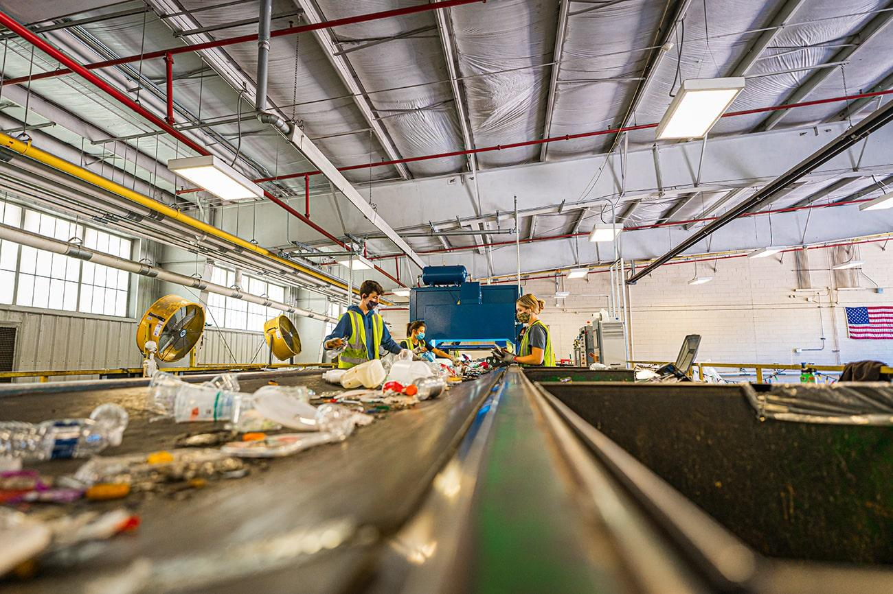

EcoSorter surge como uma proposta voltada à otimização de uma das etapas fundamentais do processo de reciclagem: a separação e a gestão dos resíduos. Inicialmente, o projeto é direcionado para estabelecimentos comerciais, mas sua aplicação pode ser expandida para outros ambientes, como residências e condomínios.

A proposta consiste no desenvolvimento de uma lixeira equipada com hardware e software capazes de realizar a separação automática dos resíduos por meio de reconhecimento de imagem. Nesse sistema, o usuário deposita o resíduo em um compartimento superior da lixeira. Uma câmera acoplada ao equipamento captura uma imagem do objeto, que é posteriormente processada pelo sistema embarcado para identificar e classificar o material. Após a classificação, mecanismos internos direcionam automaticamente o resíduo para o compartimento correspondente, de acordo com sua categoria, como orgânicos, recicláveis secos e eletrônicos. Além da separação automática, a lixeira contará com outras funcionalidades destinadas a melhorar a gestão dos resíduos. Sensores serão utilizados para monitorar o nível de preenchimento dos compartimentos, permitindo identificar quando a capacidade de armazenamento estiver próxima do limite. O sistema também poderá identificar situações em que diferentes tipos de resíduos estejam misturados ou quando o descarte realizado pelo usuário não estiver de acordo com a classificação esperada. Nesses casos, o usuário será notificado por meio de um display instalado na própria lixeira. O display também terá a função de fornecer orientações ao usuário durante o processo de descarte, contribuindo para uma utilização adequada do equipamento e para a conscientização sobre a correta separação dos resíduos. Dessa forma, o projeto busca utilizar recursos de eletrônica, sistemas embarcados, sensores, processamento de imagens e software para otimizar a separação e a gestão dos resíduos. Embora a lixeira não resolva isoladamente os problemas estruturais relacionados à reciclagem no Brasil, ela pode contribuir para tornar mais eficiente uma etapa importante desse processo, facilitando a separação dos materiais e reduzindo a ocorrência de descarte inadequado.